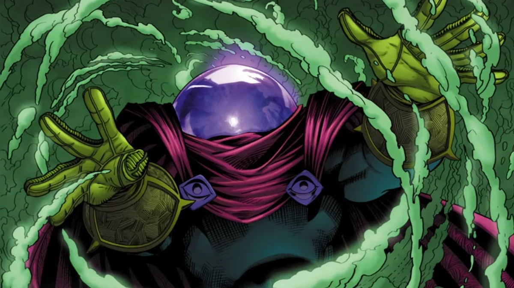
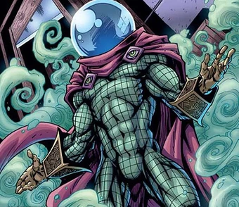
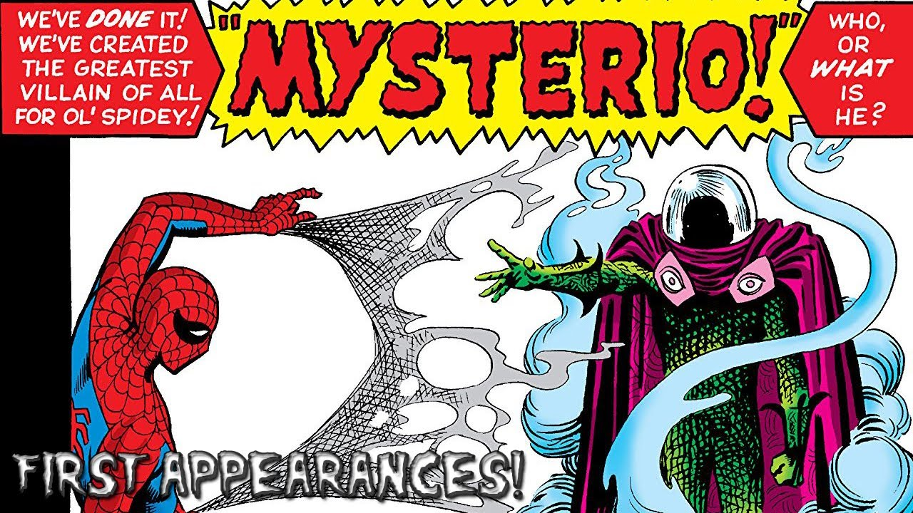
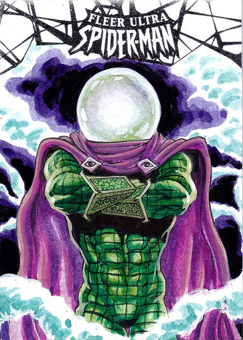

Spider-Man|
El Duende Verde |
El Hombre de Arena|
Electro|
Doctor Octopus |

¿Quién es Mysterio? (Perfil Biográfico Completo)
Mysterio, cuyo nombre real es Quentin Beck, es uno de los villanos más originales, teatrales y mentalmente desestabilizadores de todo el universo de Marvel Comics. Es el maestro indiscutible del engaño, la manipulación psicológica y los efectos especiales visuales. A diferencia de la mayoría de los miembros de la galería de villanos de Spider-Man, Mysterio carece por completo de superpoderes sobrehumanos o mutaciones genéticas; su verdadera fuerza radica en su genio para distorsionar la percepción de la realidad.
Nacido en Riverside, California, Beck fue un joven apasionado por el cine y la magia escénica. Con el tiempo, se convirtió en uno de los mejores especialistas de dobles de riesgo y expertos en efectos especiales (FX) de la industria de Hollywood. Sin embargo, su ego desmedido y su ambición de convertirse en un actor famoso en pantalla se vieron frustrados por su falta de carisma y por el poco reconocimiento que la industria cinematográfica le otorgaba a los técnicos detrás de cámaras.
El Origen y el Plan para Inculpar a Spider-Man
Frustrado por el rechazo de la industria del entretenimiento, Beck decidió aplicar sus extensos conocimientos técnicos en el mundo del crimen:
- El marco del crimen: Beck dedujo que la forma más rápida de alcanzar la fama mundial no era crear efectos para películas, sino derrotar a un superhéroe de alto perfil. Eligió a Spider-Man, quien en sus inicios era visto con desconfianza por la prensa (especialmente por el Daily Bugle).
- La duplicación de habilidades: Utilizando sus conocimientos de animación, ingeniería y química, Beck estudió minuciosamente los movimientos y capacidades del héroe. Diseñó un disfraz idéntico al de Spider-Man y utilizó proyectores y calzado magnético para simular que trepaba paredes y lanzaba telarañas, cometiendo una serie de robos bancarios para inculpar a Peter Parker.
- El debut triunfal: Tras manchar la reputación de Spider-Man, Beck se presentó públicamente como "Mysterio", un supuesto nuevo héroe dedicado a dar caza al "criminal arácnido". No obstante, durante su enfrentamiento final en los estudios de cine, Spider-Man logró grabar una confesión de Beck, revelando su verdadera identidad y enviándolo a prisión.

Creadores Detrás del Personaje y su Concepto Visual:
- Stan Lee (Guionista y Editor): Concibió al personaje bajo la idea de crear una amenaza psicológica. Lee quería un villano que no desafiara los músculos o la resistencia física de Spider-Man, sino que pusiera a prueba su cordura y lo hiciera dudar de sus propios sentidos.
- Steve Ditko (Dibujante y Co-creador): Diseñó una de las estéticas más teatrales y memorables del cómic: un traje verde con patrones de escamas, una capa morada sujeta por cierres en forma de ojos de gato y su famosa "cabeza de pecera" de vidrio de una sola vía, pensada para reflejar luz y servir como pantalla de proyección.

Hizo su debut oficial como Mysterio en The Amazing Spider-Man #13 (junio de 1964). Cabe destacar que un prototipo del personaje apareció de forma no acreditada como un criminal común que usaba ilusiones en el número 2 de la misma serie.
Arsenal Tecnológico, Dispositivos e Ilusiones
El equipo de combate de Quentin Beck está meticulosamente diseñado para anular las ventajas tácticas de Spider-Man:
- Casco de Cúpula de Plexiglás: Un casco semiesférico hecho de vidrio acrílico reflector de una vía. Permite a Beck ver en un ángulo de 360 grados, incluye un suministro interno de oxígeno (para protegerlo de sus propios gases), sistemas de visión nocturna, radares y un emisor de ultrasonidos.
- Gas Anulador del Sentido Arácnido: Su invento químico más peligroso. Disipa una niebla densa que bloquea o adormece el sexto sentido precognitivo de Spider-Man, dejándolo indefenso ante emboscadas y ataques sorpresa.
- Alucinógenos y Psicotrópicos: Mezclas químicas avanzadas que provocan terrores nocturnos, distorsión de la gravedad, pérdida del equilibrio y alucinaciones intensas en sus víctimas.
- Proyectores Holográficos y Drones Animatrónicos: Dispositivos portátiles que proyectan ilusiones tridimensionales hiperrealistas de monstruos gigantes, duplicados de sí mismo, escenarios apocalípticos o cambios de arquitectura en tiempo real.
- Botas y Guantes de Alta Presión: Equipados con emisor de humo denso para cubrir sus escapadas y muelles magnéticos para dar grandes saltos.

¿Cómo y por qué surgió la idea? (La Ilusión como Arma)
- El reto a la realidad: Lee y Ditko buscaban explorar la fragilidad de la mente humana. Con Mysterio, Spider-Man nunca sabe si está luchando contra un monstruo real, una pared de concreto o una simple proyección de luz.
- Fundador de Los Seis Siniestros (1964): Quentin Beck fue reclutado por el Doctor Octopus en The Amazing Spider-Man Annual #1, donde usó sus ilusiones para crear duplicados gigantes de los miembros del equipo y confundir al héroe.
- Diablo Guardián (*Guardian Devil* - 1999): En un hito narrativo escrito por Kevin Smith para Daredevil, un Quentin Beck moribundo de cáncer orquestó una macabra red de engaños para destrozar la vida de Matt Murdock (Daredevil), demostrando el alcance trágico y oscuro de sus habilidades psicológicas.
- Viajes Multiversales (*Spider-Men* - 2012): Se reveló que Beck fue el primer villano en descubrir la tecnología para viajar entre universos, controlando un avatar robótico en la Tierra Ultimate (Tierra-1610) para enfrentarse tanto a Peter Parker como a un joven Miles Morales.
Conclusión e Impacto Cultural
Mysterio destaca en el catálogo de Marvel por demostrar que el engaño, la química y la escenografía pueden ser tan letales como la fuerza bruta. Al convertir la ciudad de Nueva York en un gigantesco escenario cinematográfico y utilizar los miedos más profundos de sus enemigos en su contra, Quentin Beck demostró que en el mundo del crimen, la percepción es el arma más destructiva de todas.